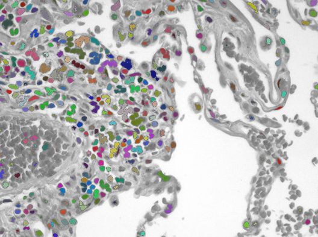
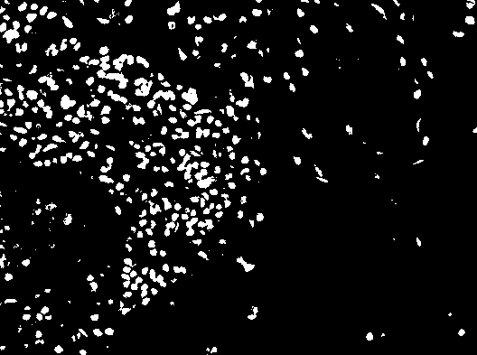

Submission deadline: 29.06.20 23:55h
In the last exercise, we want to have a look at edge detection and segmentation.
Edge Detection
7 Points
Open a test image in a new file src/main/java/exercise/Exercise06.java.
// Your name
// Team parnter name
package exercises;
import lme.DisplayUtils;
import mt.LinearImageFilter;
public class Exercise06 {
public static void main(String[] args) {
(new ij.ImageJ()).exitWhenQuitting(true);
mt.Image cells = lme.DisplayUtils.openImageFromInternet("https://upload.wikimedia.org/wikipedia/commons/8/86/Emphysema_H_and_E.jpg", ".jpg");
}
}
We will use the Sobel Filter, to estimate the gradient of the image. The Sobel Filter uses two filter kernels. One to estimate the x-component of the gradient and one for the y-component.
Create two LinearImageFilters with those coeffients. You can use filterX.setBuffer(new float[]{...})
or setAtIndex to do that.
Filter the original image with both of them!
 |
 |
| X component of gradient $\delta_x$ | Y component of gradient $\delta_y$ |
|---|
You should now have two intermediate results that can be interpreted as the x-component $\delta_x$ and y-component $\delta_y$of the estimated gradient for each pixel.
Use those two images to calculate the norm of the gradient for each pixel!
$$ \left|\left| \nabla I \right|\right| =\left|\left| \left(\delta_x,\ \delta_x \right) \right|\right| = \sqrt{ \delta_x^2 + \delta_y^2}$$

Find a good threshold and set all gradient magnitude values to zero that are below this values and all other to 1.f to
obtain an image like this with a clear segmentation in edge pixels and non-edge pixels.
Segmentation
3 Points

Source: https://commons.wikimedia.org/wiki/File:Emphysema_H_and_E.jpg (cc-by-2.0)
For histologic examinations colored subtances called stains are used to enhance the constrast of different portions of the tissue.
Use a suitable threshold to segment the individual sites with high contrast (0 background, 1 contrasted cells). You can use the following method to overlay your segmentation with the original image.
// In lme.DisplayUtils
public static void showSegmentedCells(mt.Image original, mt.Image segmented)
// You may also try `showSegmentedCells(cells, segmentation, true);` with the newest version of DisplayUtils

Improving your Segmentation
This is optional and not required for the exercise. You might want to go directly to the evaluation of this year's exercises: https://forms.gle/2pbmuWtmeTtaVcKL7
You may notice that by just choosing a threshold you may not be able to separate each individual structure.

You can try out some operations from the menu Process > Binary while you have your 0/1 segmentation focused. You have to convert to 8-bit first. E.g.
- Image > Type > 8-bit
- Process > Binary > Watershed
Or "click" on menu items in your program code.
segmentation.show();
IJ.run("8-bit");
IJ.run("Watershed");
DisplayUtils.showSegmentedCells(cells, segmentation);
Evaluation
We redesigned the exercises from scratch for this semester. Therefore, some of the exercises might have been difficult to understand or too much work. We are glad for your feedback to help future semesters' students😊: https://forms.gle/2pbmuWtmeTtaVcKL7